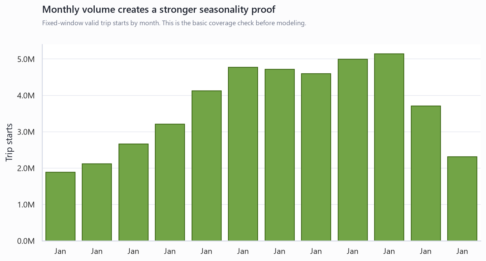
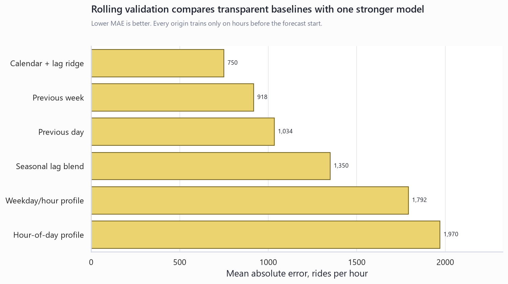
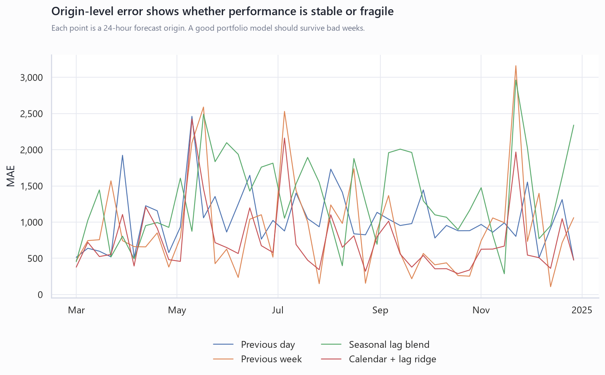
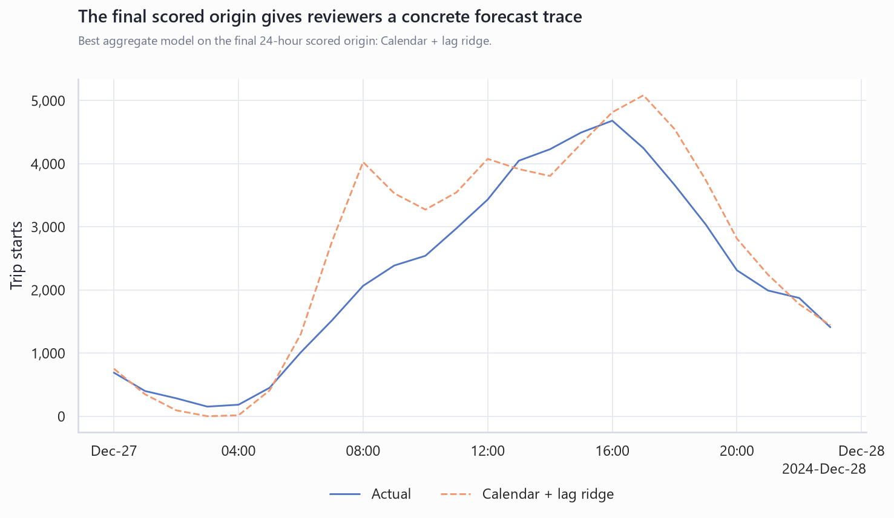

Citi Bike Multi-Month Forecast Proof
This report upgrades the original January-only showcase into a longer rolling-validation proof. It keeps the target simple and auditable: valid Citi Bike trip starts per hour.
12months profiled
8,784hourly observations
44rolling origins
750best MAE, rides/hour
What changed from the first showcase
The project now has a stronger proof layer: multiple months of public archives, a complete hourly panel, weekly rolling 24-hour forecast origins, transparent baselines, and one regularized calendar-lag model. The best aggregate model in this run is Calendar + lag ridge.
Coverage and validation charts





Rolling model comparison
| Model | Origins | Holdout Hours | Mean Actual | MAE | RMSE | MAPE | Origin Win Rate |
|---|---|---|---|---|---|---|---|
| Calendar + lag ridge | 44 | 1056 | 5,662 | 750 | 1,163 | 28.1% | 36.4% |
| Previous week | 44 | 1056 | 5,662 | 918 | 1,538 | 22.9% | 36.4% |
| Previous day | 44 | 1056 | 5,662 | 1,034 | 1,547 | 23.4% | 11.4% |
| Seasonal lag blend | 44 | 1056 | 5,662 | 1,350 | 1,831 | 29.0% | 9.1% |
| Weekday/hour profile | 44 | 1056 | 5,662 | 1,792 | 2,369 | 36.7% | 6.8% |
| Hour-of-day profile | 44 | 1056 | 5,662 | 1,970 | 2,550 | 38.5% | 0.0% |
Monthly source inventory
| Month | Valid Rows | Fixed-Window Rides | Valid Rate | Archive MB |
|---|---|---|---|---|
| 2024-01 | 1,886,109 | 1,885,947 | 99.9% | 369.0 |
| 2024-02 | 2,119,759 | 2,119,772 | 99.9% | 414.7 |
| 2024-03 | 2,660,492 | 2,660,571 | 99.9% | 520.8 |
| 2024-04 | 3,213,017 | 3,212,949 | 99.9% | 629.6 |
| 2024-05 | 4,127,680 | 4,128,648 | 99.8% | 809.1 |
| 2024-06 | 4,775,760 | 4,775,185 | 99.8% | 936.0 |
| 2024-07 | 4,715,602 | 4,715,625 | 99.8% | 923.3 |
| 2024-08 | 4,596,258 | 4,596,529 | 99.8% | 900.0 |
| 2024-09 | 4,991,804 | 4,991,348 | 99.9% | 976.5 |
| 2024-10 | 5,144,572 | 5,145,143 | 99.9% | 1,006.6 |
| 2024-11 | 3,706,689 | 3,705,932 | 99.9% | 724.4 |
| 2024-12 | 2,310,074 | 2,309,821 | 100.0% | 450.8 |
Honest limits
- Trip starts are modeled, not live bike inventory or station capacity.
- Station names and IDs still need a dedicated station-metadata audit before station-level forecasts.
- The ridge model is intentionally simple. It proves feature discipline, not best-possible forecast accuracy.
- External events and weather are not yet used in the multi-month model.